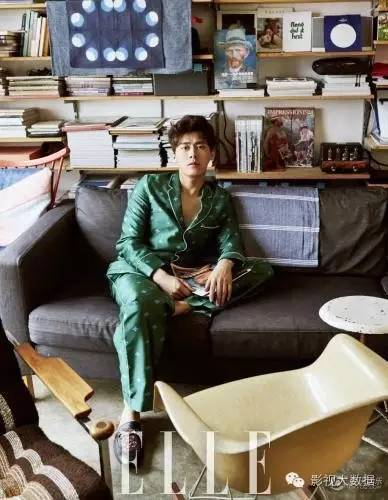
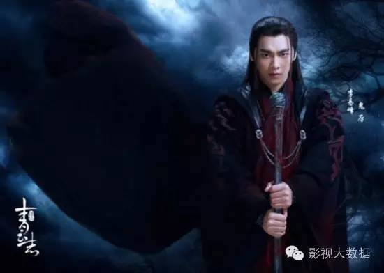
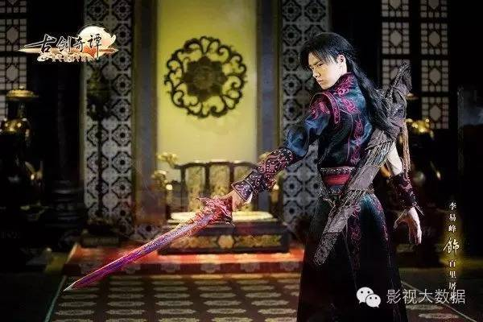
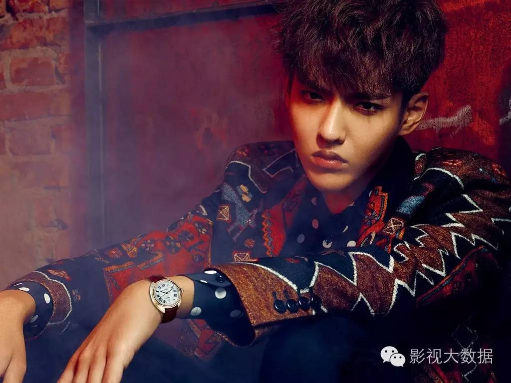
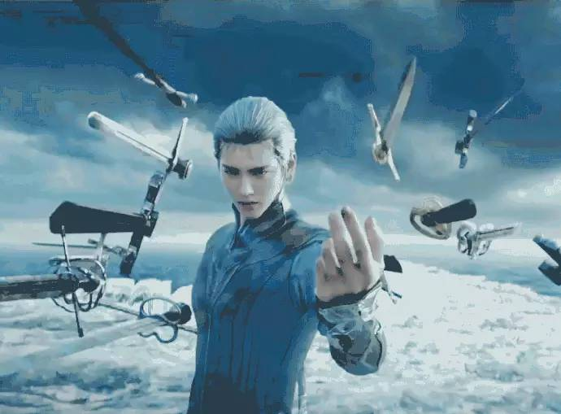
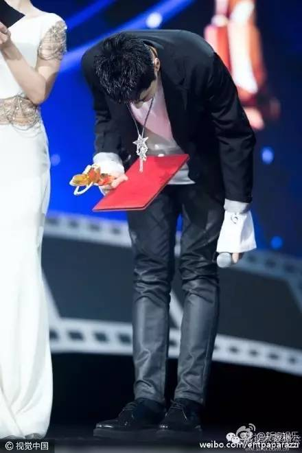

深度|李易峰吴亦凡相继舆论危机，小鲜肉经济该反省了吗？
“小鲜肉”这个流行了一段时间的词语，似乎渐渐被人等同于“有颜没演技，有青春没技能，有粉丝没持续力”，而随着两位鲜肉或真或假一波一波的负面新闻，一时间“小鲜肉”似乎成了青年男艺人们人人甩锅、避之不及的负面形容。
有大佬感慨，现在的影视经济，已经被大IP、小鲜肉两头捆绑，走向畸形发展。如今大IP的收益率乱象粗显，小鲜肉对影视产业的拉动效应似乎也存疑了。尤其是李易峰、吴亦凡这样的鲜肉领头羊相继闹出舆论危机之后，更让人对以“人设、颜值、青春”取胜的小鲜肉经济产生困惑：
也许是受到“标签化商业推广更高效”这个理念的影响，目前，国内的小鲜肉经济似乎有个趋势——艺人的真实才艺、品行、爱好都在其次，更需要服务于经纪团队根据市场需求设计的人设，所以，无论艺人私下是个怎样的人，台面上的他几乎是个千篇一律的“阳光正能量偶像、关爱社会、政治正确、暖男、高富帅”，顶多在细节上有少许区分，比如也许他是个猫系男，也许他是个狗系男，高冷、软萌、逗比、学长、邻家、霸道总裁，来来回回不外乎就是这些。
比如李易峰的人设是“根正苗红李政委”：
吴亦凡的人设是“高富帅清纯上进的学长”：
而最近两人遇到的信任危机，正是出在“根正苗红”、“清纯上进”两个关键性人设崩塌上面。
且不论具体两件事的程度谁轻谁重、真实度和网上法律讨论的严谨程度，李和吴遇到的人设危机，事实上暴露出了粉丝经济的短板： 艺人的个性被淹没在粉丝经济的市场需求适配之下，粉丝们购买的不是真实的艺人，而是她们臆想中“认为是”、“应该是”、“必须是”的人设。
这似乎很精辟地诠释了“偶像”的定义，承载和消费的是少女梦的想象。年轻的艺人们在偶像的标签下得到极大的经济效益，但也制约了真实的专业成长，在小鲜肉经济的威力下，小鲜肉成了公司事实上的最大资源池和利润点，公司和团队甚至越来越难以管束小鲜肉的私人生活，让人设与真实之间极容易产生崩离。

李易峰车祸后身陷舆情危机，DataWin影视大数据曾经做过专题舆情跟踪，传媒和自媒体的负面情感高于70%。
在北京市交警方面做出“交通肇事逃逸”的结论后，更是被CCTV、人民网法制频道等报道，李易峰成为第一个因为负面新闻上央视的小生，在社会上形成了一定的负面印象。甚至有专家认为，“处罚过轻，对公众有示范效应”。
前几日更有网传”L姓小鲜肉吸毒”的传闻，一时间众说纷纭指向李易峰，尽管事后新浪微博和平安北京都进行了辟谣，李易峰团队更发誓要告到底，但对李易峰的公众形象还是形成了一定的关联性破坏。
目前的商业价值方面，李易峰的广告代言有真果粒、蒙牛GO畅、戴尔比斯、OPPO手机、佳能EOS、凌仕、玉兰油、蘑菇街、康师傅绿茶、愤怒的小鸟、百事可乐、乐事薯片、美特斯邦威、特步、QQ浏览器、德芙巧克力、炫迈、泰格豪雅瑞士名表、盗墓笔记S手游、植村秀、搜狐新闻、钻石Forevermark(永恒印记)等，在小生中具备一流的商业价值。一来个人形象气质良好，正能量人设加分，二来公司团队给力。
杂志资源方面，李易峰本身外表条件、时尚感不错，最重要的是有人气加持。目前男刊已经满贯，包括《GQ智族》、《时尚先生》、《时装男士》、《芭莎男士》、《ELLEMEN睿士》等。尽管李易峰有大量的商业代言和较强的杂志资源，但这类代言和封面更多是体现李易峰个人品牌的商业价值，属于锦上添花而非雪中送炭的项目，在个人形象受损的情况下，商业代言很难帮助李易峰重塑形象。相反，部分代言商家若出现换人或者合约到期不再续约的情况，难免引起对个人形象的进一步消减。
从李易峰已拍摄完成的两部作品看，《诛仙》很可能早于《麻雀》上线，这对李易峰的形象恢复是有利的，毕竟诛仙为玄幻IP剧，距离现实生活更远，而且人设不是那么“根正苗红”，观众不容易产生代入和抵触情绪。

如果是《麻雀》近期上线，有可能引起部分观众的强烈情绪反弹。李易峰如果能通过诛仙取得更多的观众好感度，再搭配适当的公关运营和个人品牌建设，通过《麻雀》进一步打消负面印象，则不但有望个人形象提升，还有利于实现从偶像艺人到演员的顺利转型。
作为85后艺人的人气魁首，李易峰目前是85后艺人走偶像路线的代表人物，也是“大IP+小鲜肉”模式的经典成功者，《古剑奇谭》、《盗墓笔记》等大IP的加持作用不可小看。其余的林更新、井柏然、窦骁等走电影演员路线，陈晓、陈伟霆等走影视双刷路线，有意无意都已经退出了小鲜肉市场竞争，独有李易峰还在捍卫着85后的偶像市场价值。

但时至如今，随着艺人年龄增长，大IP逐渐审美疲劳，这条路变得有些坎坷。《诛仙》尽管是大IP，且原著影响力极大，堪称网文中的优秀代表作，影响力很难和大IP兴起之初的古剑奇谭相提并论。
曾几何时，以李易峰为代表，85后小生率先掀起了“小鲜肉”风潮，成为小鲜肉经济的先行者。时隔两年，第一代小鲜肉却已经全面退出偶像型市场。85后们纷纷以“其实我是一个演员”为自我目标，开始了下一轮的市场竞争。
如果说李易峰面临是社会大众层面的人设坍塌和形象危机，影响了大众价值；那么吴亦凡更多是面向粉丝层面的人设坍塌，进而导致了粉丝危机，影响了粉丝经济价值。
少女情怀总是诗，粉丝们对吴亦凡的人设倾向于“高富帅清纯上进学长”，“约炮门”一出，即使真如团队所说系伪造，但迟钝的反应速度也依然对其清纯形象造成了冲击。
而此次事件，首当其冲受影响的，是吴亦凡的品牌商业价值。
吴亦凡之前作为小鲜肉经济的代表人物、第二代归国韩流的风潮引领者，粉丝潜在消费力较高，其时尚度、质感等都足以成为潮流先锋。拥有阿迪达斯、宝格丽腕表、雷朋墨镜、戴尔笔记本电脑、Smart汽车、统一冰红茶、舒克牙膏、魅夜鸡尾酒、蒙牛、全民突击网游等商业代言，还曾为高端奢侈品牌巴宝莉走秀，拥有包括《Vogue》正刊在内的大量的杂志资源。
可以说，吴亦凡的商业价值很大程度上来自其粉丝的购买力和凝聚力，以及吴亦凡个人形象的时尚感、高端质感。在偶像形象和清纯人设破灭之后，高端质感有可能不保，粉丝经济价值也会有所消退，社会认可度下降，商业价值也受到威胁。

但也必须说，吴亦凡仍然有一大把圈内人脉支持，耀莱影业的签约认领，不久前上海电影节的“最受传媒关注新人奖”，甚至冯小刚、管虎等导演在风波之后都先后公开发言力挺，正说明了业内对吴亦凡的前途仍然有相当期待。
另一方面，吴亦凡拥有强势的电影资源。
这些已拍摄待上映的作品能把吴亦凡从负面传闻中拉开，让公众聚焦到他的作品吗？
此次风波，对吴亦凡的偶像形象是个重创，粉丝恐怕会有不少流失。在这个粉丝群体几乎为偶像承担起一部分危机公关、社交往来、宣传造势功能的时代，这不能不说是一种很大的损失。
只不过近期的《原来》、《夏木》恐怕注定会受影响，因为一是离风波太近，舆论无法平息；二是两者剧情中的人物都是深情、痴情、学长or学生设定，确实与吴亦凡目前风波引发的形象危机有很大冲突。
但在《爵迹》后吴亦凡仍然有可能热度回流。《爵迹》本身题材新颖，郭敬明善于宣发，即使电影真的技术不成熟，大概也免不了“看了再骂”的票房收益，所以《爵迹》不是没有爆的可能，吴亦凡的角色“银尘”人设又拉好感，届时可能又会有新粉。

待到《西游伏妖篇》上映，以周星驰的市场容量和情怀调动能力，很能给艺人增加社会好感度，吴亦凡有机会再次迎来事业发展，并从粉丝层面的关注突围到大众层面的关注。
反而是两部好莱坞大片，未必能给吴亦凡带来太多的事业加持。之前华人演员在好莱坞出演角色，受戏份、形象、文化差异等各种制约，几乎无人能对事业形成太大的帮助，仅仅是圈内地位可能有所提高，吴亦凡也难以例外。
不过，吴亦凡在风头火势上加盟耀莱影视，不排除以成龙为榜样，深度开拓好莱坞市场的想法。
此前，成龙大哥已经要求吴亦凡低调行事，也许这正是以作品为基础，温和渡过形象危机的良策。

总体而言，本次事件对吴亦凡应该不会形成颠覆性影响，商业价值可能会面临损失，演艺资源却仍然可保一年强势竞争力地位。
但不可否认，小鲜肉的性价比，正在遭受考验。
市场也面临反思：2000万的IP+2000万的小鲜肉+50万的编剧=？
这个价格也许已经OUT，IP和小鲜肉的价格早已经更贵，但影视行业的酬劳体系扭曲，势必带来价值扭曲和回报艰难。不管是IP还是鲜肉，都将逐渐恢复理性。
李易峰和吴亦凡的相继危机，对小鲜肉经济的两极，提出了新的思考。在这之后，新一轮市场洗牌或将开始。